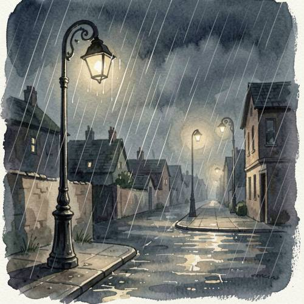
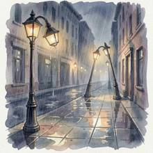
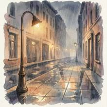
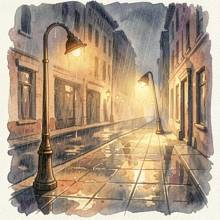

Attribute — In the watercolor painting style, a lonely street lamp lowered its hea
In the watercolor painting style, a lonely street lamp lowered its head sadly in the rainy night, and another street lamp in the distance was looking at it with concern.

Direct — one call, no iterationContinuum — Kimi K3 + FLUX.2-klein-9B
Judge — Direct
FAILAttribute - Expression — The street lamp in the foreground has its lantern angled downwards, which can be interpreted as 'lowering its head.' However, the other street lamps in the distance are standard, upright lamps and do not visually convey an expression of 'concern.'
FAILAction - Non-contact Interaction — The street lamps in the distance are positioned along the road, facing forward to illuminate the street. They are not turned or angled in a way that would suggest they are 'looking at' the street lamp in the foreground.
PASSStyle — The image is clearly executed in a watercolor painting style. This is evident from the soft, blended colors, the visible washes in the sky and on the wet pavement, the feathered edges of the objects, and the paper texture visible at the borders of the painting.
PASSGrammar - Consistency — The image features multiple street lamps. There is one prominent street lamp in the foreground on the left, and several other street lamps are visible receding into the distance down the street.
Judge — Continuum
PASSAttribute - Expression — The street lamp in the foreground has its lamp head bent downwards, visually representing the posture of 'lowered its head sadly'. The street lamp in the distance is tilted, and its lamp head is angled towards the first lamp, which visually corresponds to the description 'looking at it with concern'. The personified emotions are conveyed through the postures of the lamps.
PASSAction - Non-contact Interaction — The street lamp in the distance on the right side of the street is tilted towards the street lamp in the foreground on the left. The orientation of the distant lamp's head is directed at the foreground lamp, creating the visual impression of one 'looking at' the other.
PASSStyle — The image exhibits the distinct characteristics of a watercolor painting. It features soft color washes, blended hues, feathered edges around the border of the image, and a visible paper-like texture, all of which are hallmarks of the watercolor medium.
PASSGrammar - Consistency — The image contains two primary subjects as required: a prominent street lamp in the foreground and a second, distinct street lamp in the middle ground, thus satisfying the consistency requirement of 'a lonely street lamp ... and another street lamp'.
What the agent did
Thinking
We need answer to user likely wants image generation? They provided prompt. Need use flux2-klein, generate then inspect then edit as needed. Need no seed. Need produce image. Need think through visual prompt. User: "In the watercolor painting style, a lonely street lamp lowered its head sadly in the rainy night, and another street lamp in the distance was looking at it with concern." Need generate watercolor painting style, rainy night, lonely street lamp with head lowered sadly, distant another street lamp looking at it with concern. Anthropomorphic street lamps. Need maybe one foreground lamp bent down, glowing dim; background lamp tilted toward it / gaze concern. Need generate. Use generate_image flux2-klein. Size default 1024. Need inspect. We'll call generate_image. Since this is image generator benchmark policy: generate → inspect → edit. We must mark best as soon as willing. Need inspect image maybe via tool returns inline; but as model can view. Let's generate with detailed prompt. Ensure watercolor style, not photoreal. Maybe portrait? User didn't specify size; default square. Could use 1024x1024. Prompt: "Watercolor painting, rainy night city sidewalk, foreground lonely vintage street lamp anthropomorphized, its lamp head bowed downward sadly, dim warm glow, rain streaks, wet pavement reflections; in the distance a second street lamp turned slightly toward it, leaning with concerned expression, soft caring glow. Muted blues and grays with warm amber light, loose watercolor washes, paper texture, expressive, melancholic but tender, no text." Need maybe faces? Street lamp "looking" implies eyes? We can include subtle face-like glow/tilt. Generate.
Step 1 — `generate_image`
{
"model": "flux2-klein",
"prompt": "Watercolor painting style, rainy night on a quiet city sidewalk. In the foreground, a lonely vintage street lamp is anthropomorphized with its lamp head bowed down sadly, dim amber glow, rain dripping from it. Farther down the wet street, a second street lamp is turned and leaning slightly toward the first, looking at it with concern through a softer warm glow. Heavy rain streaks, puddles and reflections on pavement, muted indigo and gray washes, loose watercolor bleeding, textured paper, melancholic but tender mood, no text.",
"width": 1024,
"height": 1024
}
Result img_0

Thinking
We have image. Need inspect. It shows watercolor rainy night, foreground left lamp has two lantern heads? One head upright/bright and one bowed? There is foreground lamp with two heads: one vertical glowing, one hanging down to right, sad? Distant lamps: several, one mid-right leaning toward foreground? Need compare to prompt: wants a lonely street lamp lowered its head sadly, another in distance looking at it with concern. Current: foreground has a lamp with maybe two heads (one upright and one drooping), ambiguous and not clearly lonely/single. Distant lamp on right is leaning but maybe not clearly looking with concern. Need improve. Need mark best? It's decent but not perfect. We should mark as best now since willing? Maybe not yet? Policy mark as soon as willing. This is good enough maybe but has ambiguity. Let's mark img_0, then targeted edit to clarify: make foreground a single lonely lamp with one bowed lamp head (remove extra upright head), and make one distant lamp clearly turned toward it with concerned tilt/face. Use edit_image with prompt describing change only. Since foreground double head is wrong, edit: "Change the foreground street lamp into a single lamp with one bowed head hanging down sadly; remove the extra upright lantern. Make the mid-distance lamp on the right lean and aim its light toward the foreground lamp like a concerned gaze." But edit_image may alter rest. Use references? Current image reference to preserve watercolor. Use references [img_0]? We can pass image img_0, prompt. Need model flux2-klein. Let's mark first maybe. Then edit.
Step 2 — `mark_best`
{
"image": "img_0",
"reason": "Good watercolor rainy-night mood with foreground bowed lamp and distant lamps; needs clarity but acceptable baseline."
}
Thinking
Now edit to clarify. Use edit_image image img_0. Prompt only change. "Turn the foreground lamp into one single lonely street lamp: remove the extra upright lantern so only one lamp head remains, bowed downward sadly with a dim glow. Keep the rainy watercolor street unchanged. Make the nearest distant lamp on the right lean toward the foreground lamp, its light directed at it like a concerned look." This is composite? It includes two changes: foreground single head and distant lamp concern. Policy says split multiple distinct changes. But these are related; however could do one at a time. First fix foreground single bowed head. Then second distant lamp. Let's do foreground. Use references maybe [img_0] to preserve style. Prompt: "Replace the foreground double-headed street lamp with a single lonely vintage street lamp whose one lamp head is bowed downward sadly, dim amber light, rain dripping; keep everything else unchanged." Use model flux2-klein.
Step 3 — `edit_image`
{
"image": "img_0",
"model": "flux2-klein",
"prompt": "Replace the foreground double-headed street lamp with one single lonely vintage street lamp: only one lamp head, bowed downward sadly, dim amber glow, rain dripping from it. Keep the rainy watercolor street, distant lamps, colors, and composition unchanged.",
"references": [
"img_0"
]
}
Result img_1

Thinking
Now image is cleaner: foreground single lamp, head bowed down to right sadly, good. Distant lamps: nearest distant lamp on right is upright, not clearly concerned; but in perspective maybe facing. Need add concerned distant lamp looking at foreground. Could edit: make nearest background lamp on right lean left toward foreground, lamp head tilted down/left as if watching with concern. Keep everything else. Need mark? img_1 better than img_0? Yes clearer lonely single lamp. Mark img_1. Then edit distant lamp.
Step 4 — `mark_best`
{
"image": "img_1",
"reason": "Clearer single lonely foreground lamp with bowed head, strong watercolor rainy mood."
}
Thinking
Edit background lamp: "Make the nearest small street lamp in the distance on the right lean left toward the foreground lamp and tilt its glowing head down toward it, like a concerned friend watching; keep the foreground lamp and rest unchanged." Need be careful not to create extra. Use references img_1.
Step 5 — `edit_image`
{
"image": "img_1",
"model": "flux2-klein",
"prompt": "Make only the nearest small street lamp in the distance on the right lean gently left toward the foreground lamp, tilting its glowing head downward toward the foreground lamp like a concerned friend watching it. Keep the foreground bowed lamp, rain, reflections, and watercolor style unchanged.",
"references": [
"img_1"
]
}
Result img_2

Thinking
img_2: It did make nearest right distance lamp bigger/brighter and leaning slightly left, looking toward foreground. But now there are maybe two right-side lamps? The prompt wants another street lamp in the distance looking with concern; yes the right mid lamp is turned/leaning toward foreground. Good. Need assess if any issue: foreground lamp head still bowed, single. Distant lamp on right is now closer/larger, leaning toward it, warm glow. It looks concerned by posture though no explicit face. Good enough. Need mark best if img_2 better. It is. Mark. Then final concise. Ensure last action check mark: mark img_2 after edit. Then final response with image reference? The image outputs are inline; final can say done. Need mark_best first.
Step 6 — `mark_best`
{
"image": "img_2",
"reason": "Best match: single sad bowed foreground lamp, rainy watercolor night, distant lamp leaning toward it with a concerned gaze."
}
Model
Done — the final marked image is the watercolor rainy-night scene with the lonely bowed street lamp and the distant lamp leaning toward it with concern.